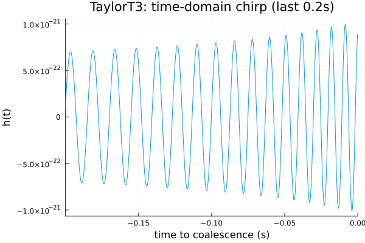
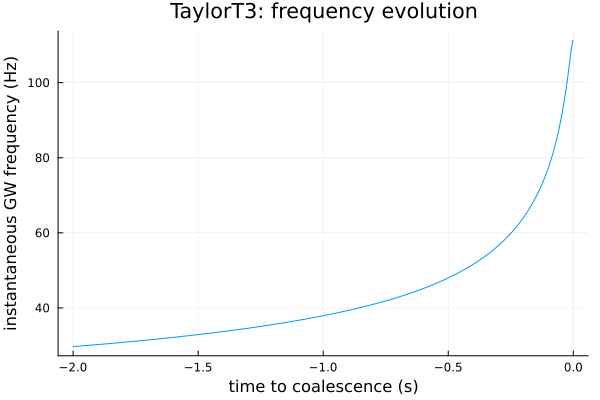

Time-Domain PN: TaylorT3
Every model so far has been frequency-domain: Phi/Ampl (or hphc) evaluated over a frequency grid, the natural domain for the phenomenological IMRPhenomX* family. TaylorT3 instead works directly in the time domain — a non-spinning, closed-form 3.5PN post-Newtonian inspiral, ported verbatim from lalsimulation's legacy TaylorT3 generator (XLALSimInspiralTaylorT3PNEvolveOrbit/Phasing3_7PN/Frequency3_7PN — see TaylorT3.jl's module docstring for the full port history, including a genuinely subtle t=0 epoch-alignment correction found via direct LALSuite cross-validation). This is the same family of models lalsimulation's SimInspiralChooseTDWaveform (and ripple's own time-domain generators, for the models it implements) produce directly as h(t) arrays.
using GravitationalWaveforms, Plots
gr()Plots.GRBackend()The t <= 0 convention
TaylorT3's time argument follows LALSuite's own choose_td_waveform output convention: t <= 0, with t = 0 nominally "coalescence" (see Conventions and TaylorT3's own docstring for why this is not the formula's literal phasing singularity). A waveform is generated by choosing how far before coalescence to start:
m1, m2 = 10.0, 10.0
mc = (m1 * m2)^(3 / 5) / (m1 + m2)^(1 / 5)
eta = (m1 * m2) / (m1 + m2)^2
dL = 0.1 # Gpc -- close, to keep amplitudes O(1e-21) rather than vanishingly small
validate_taylort3_params(eta; dL=dL)
deltaT = 1.0 / 4096.0
t = collect(-2.0:deltaT:-deltaT) # 2 seconds of inspiral leading up to coalescence
phi = Phi(TaylorT3(), t, mc, eta)
amp = Ampl(TaylorT3(), t, mc, eta, dL)Reconstructing h(t) and the instantaneous frequency
Same h ~ Ampl*exp(i*Phi) convention as the frequency-domain models (see Conventions), just with t instead of f as the independent variable:
h = @. -amp * cos(phi)
plot(t, h; xlims=(-0.2, 0), legend=false,
xlabel="time to coalescence (s)", ylabel="h(t)", title="TaylorT3: time-domain chirp (last 0.2s)")
This is the plot the frequency-domain tutorials could only gesture at — an actual chirp waveform, amplitude and frequency both visibly increasing as coalescence approaches. The instantaneous GW frequency is recoverable directly from the phase (f = (1/2pi) dPhi/dt, since Phi is already the GW phase, not the orbital one — see Conventions):
f_inst = diff(phi) ./ (2 * pi * deltaT)
plot(t[1:end-1], f_inst; xlabel="time to coalescence (s)", ylabel="instantaneous GW frequency (Hz)",
title="TaylorT3: frequency evolution", legend=false)
The frequency sweeps smoothly upward across the full 2 seconds shown, from ~30 Hz to ~110 Hz for this 20 Msun equal-mass system — the classic PN inspiral chirp, entirely consistent with f ~ t^{-3/8}, the leading-order PN frequency-time relation this same physics reduces to at 0PN (see the next tutorial, ODEToy, for that closed-form limit made explicit).
Next: ODEToy revisits this same "increasing chirp frequency" physics at the very simplest (0PN, non-spinning) order, but generated by numerically integrating an ODE rather than evaluating a closed-form PN series — the architecture pattern this package's future EOB-track models will build on.
This page was generated using Literate.jl.